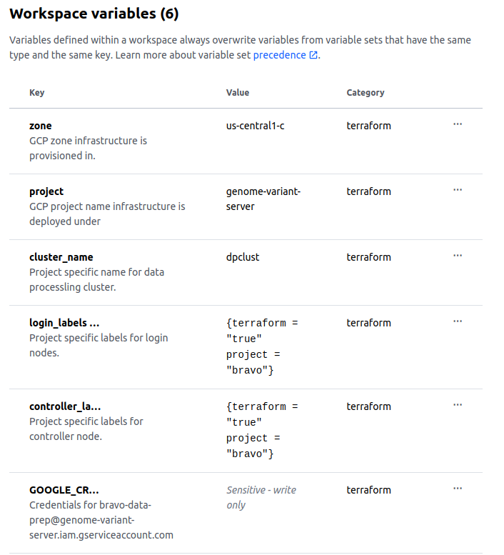
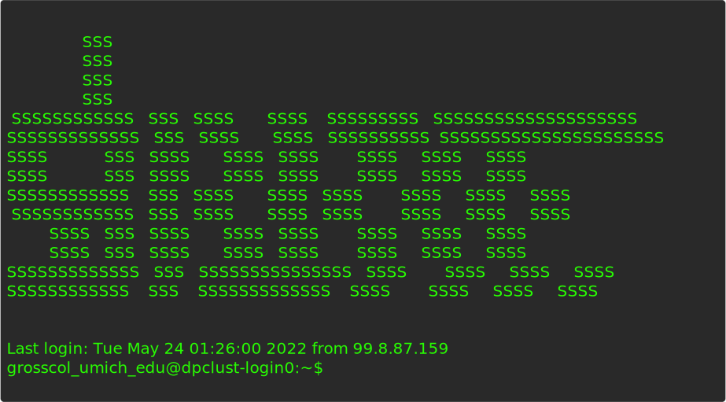

Colin Gross
2022-05-23
Building compute infrastructure and shaving yaks.
Yak shaving refers to a series of tangential tasks that need to be performed before a project can progress.
Attributed to Carlin Vieri and inspired by an episode of The Ren & Stimpy Show.
The term’s name alludes to the seemingly random and tangential nature of the tasks being performed, even though they may be necessary to solve a larger problem.
SchedMD® is the core company behind the Slurm workload manager software, a free open-source workload manager designed specifically to satisfy the demanding needs of high performance computing.
tf)
Current terraform version is 1.2.1
terraform {
required_providers {
google = {
source = "hashicorp/google"
version = ">= 3.54"
}
}
required_version = ">= 0.12.20"
}Variables in child modules are no longer automagically present.
Warning: Value for undeclared variable Warning: Value for undeclared variable Warning: Value for undeclared variable Warning: Value for undeclared variable
variables.tf in top level module.# Placeholders for vars of modules passed verbatim
# See io.tf of modules for full description.
variable "controller_machine_type" {}
variable "controller_image" {}
variable "controller_disk_type" {}
variable "controller_disk_size_gb" {}Terraform Cloud is an application that helps teams use Terraform together.

Runs on terraform cloud remote VM:
Running plan in Terraform Cloud. Output will stream here. Pressing Ctrl-C
will stop streaming the logs, but will not stop the plan running remotely.
Preparing the remote plan...
To view this run in a browser, visit:
https://app.terraform.io/app/statgen/bravo-slurm/runs/run-tbnYAVwbcp9W2R5s
Waiting for the plan to start...
Terraform v1.1.7
on linux_amd64
Initializing plugins and modules...TF top level directory + cloud Workspace Vars
In provider modules, found relative paths to outside project directory.
metadata_startup_script =
file("${path.module}/../../../scripts/startup.sh")Only one directory above modules is available!
slurm_vms/
├── main.tf
├── modules
│ ├── compute
│ ├── controller
│ └── login
├── variables.tf
└── versions.tf└── modules
├── common
│ └── scripts
│ ├── startup.sh
│ └── util.py
├── compute
├── controller
└── loginProvide scripts from sibling module
metadata_startup_script =
module.common.metadata_startup_script∫ workspace/slurm_net (main)⮞ terraform applyfilestore_ip_app = "10.195.88.34"
filestore_ip_home = "10.8.189.242"
filestore_name_app = "slurm_app"
filestore_name_home = "slurm_home"
network_name = "bravo-slurm-vpc"
subnet_name = "bravo-slurm-subnet"∫ workspace/slurm_vms (deb_img)⮞ terraform applylogin_nat_ips = [
"34.72.34.241",
]
Single partition (queue) with 3 compute nodes
Does most of the things a remote shell script would do, but safer.
- name: Retrieve GERP scores for GRCh38
block:
- name: Copy GERP scores from cache bucket
ansible.builtin.command:
cmd: "gsutil cp {{bucket_gerp}} {{loftee_data_gerp}}"
creates: "{{loftee_data_gerp}}"
rescue:
- name: Copy GERP scores from Ensembl
ansible.builtin.get_url:
url: "{{gerp_scores_url}}"
dest: "{{loftee_data_gerp}}"Many ansible modules specify how they avoid unneccesary work in their attrs.
creates: If the specified absolute path (file or directory) already exists, this step will not be run.
force: Influence whether the remote file must always be replaced. If yes, the remote file will be replaced when contents are different than the source.
When creates attribute not available, lockfile idiom is easy to implement.
- name: Check if VEP install lockfile present
ansible.builtin.stat:
path: "{{vep_dir}}/.ansible_lock"
register: vep_install_lock- name: Install VEP
ansible.builtin.command:
chdir: "{{vep_dir}}"
cmd: "perl INSTALL.pl --CACHEDIR {{vep_cache_dir}} --PLUGINS all --AUTO ap -q -n"
when: vep_install_lock.stat.exists == false
- name: Create VEP install lockfile after install
ansible.builtin.copy:
dest: "{{vep_dir}}/.ansible_lock"
content: "VEP installed via Ansible"
when: vep_install.changedDon’t have to handle passing around credentials.
gs://bravo-deploy-cache/gerp_conservation_scores.homo_sapiens.GRCh38.bw
gs://bravo-deploy-cache/homo_sapiens_vep_106_GRCh38.tar.gz
gs://bravo-deploy-cache/hs38DH.fa
gs://bravo-deploy-cache/hs38DH.fa.fai
gs://bravo-deploy-cache/human_ancestor.fa.gz
gs://bravo-deploy-cache/human_ancestor.fa.gz.fai
gs://bravo-deploy-cache/human_ancestor.fa.gz.gzi
gs://bravo-deploy-cache/loftee.sql.gzProject organization where related tasks can be grouped together, and run independently.
roles/
├── basis_data
├── data_prep
├── gcc
├── htslib
├── libstatgen
├── loftee
├── nextflow
├── packages
├── ref_data
├── samtools
├── test_data
├── vep
└── vep_cachegrosscol_umich_edu@dpclust-login0:
~/nf_smoke_test$ nextflow run smoke_test.nf -profile slurmN E X T F L O W ~ version 21.10.6
Launching `smoke_test.nf` [high_cajal] - revision: e42f5cc55c
executor > slurm (51)
[65/e2c998] process > calc_md5s (49) [100%] 50 of 50 ✔
[f1/71365e] process > collect_md5s [100%] 1 of 1 ✔
Completed at: 24-May-2022 15:10:13
Duration : 1m 51s
CPU hours : (a few seconds)
Succeeded : 51